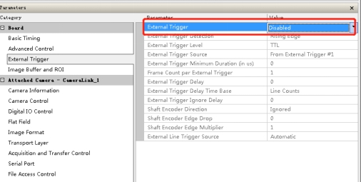

使用CameraLink线阵相机时需要安装采集卡驱动和相机专家，采集卡的驱动要根据采集卡型号来安装，Sapera_LT是相机专家，在官网上找最新版安装即可，安装步骤为依次点击下一步安装，下面是相机专家和采集卡驱动的截图；
Sapera_LT相机专家
接线：
在插拔采集卡时需要关机操作，采集卡安装好后正常情况下最上端的绿灯会亮起；
有的采集卡和相机连接时，线的连接有方向，注意看线上的标志：比如把Camera一端接到相机上，另一端（PC）接到采集卡；
CameraLink有模式之别，BASE，Medium，FULL，有的相机可采集卡连接需要一根线（Base），有的需要两根线（Medium，FULL），当相机和采集卡连接需要两根线的时候，卡和相机的连接顺序需要一致，比如相机尾部标有DATA1和DATA2需要和卡上的·CL1和CL2对应；
一般来说卡和相机正常工作会有3个绿灯亮起，在保证上面连接正确的情况下卡上有红灯亮起，请检查下面的一些设置（该设置假定是相机工作在Full模式下，如果是其他模式请做相应的切换）：
CameraLink接口相机：Teledyne Dalsa线阵系列CameraLink接口相机根据其数据率的不同分为CameraLink Base、Medium和Full三种类型，首先要根据相机的型号选择正确的采集卡，然后更加采集卡再来选择合适的板卡插槽，目前Teledyne Dalsa采集卡系列中有PCI-X、PCI-X1、PCIEx4、PCIEx8等4中接口类型，在工控机选型的时候也需要注意选择带有对应插槽的主板，目前一般的工控机主板都带有PCIEx16的插槽，可以向下兼容PCI-X、PCI-X1、PCIEx4、PCIEx8；本文主要介绍Full类型的使用；
务必按照相机的说明文档接线，如果在相机电源上接触发有可能会引起采集卡灯变红，显示器黑屏，严重会烧毁相机、采集卡等硬件设备。
识别相机设置:
点击开始菜单->点击打开Teledyne DALSA 文件夹->找到对应采集卡驱动，这里是X64 XCekera-CL PX4->点击Firmware Update
在弹出的Teledyne DALSA DeviceManager对话框中点击Manual按钮；
对于CameraLink接口相机，在采集卡的驱动程序安装完成之后，根据选型相机的工作模式需要对采集卡进行固件刷新，选择对应的CameraLink Base、Medium或者Full模式,本文选择Full模式后点击左上角的StartUpdate，等待返回成功即可；
通过上的配置，采集卡上的灯基本上就是绿色了，此时就可以设置基本参数和采集图像了，当我们需要配置相机信息，但是Attached Camera-CameraLink_1不存在则需要进行spera Configuration设置；
Physical port name选择采集卡的名称；
COM port mapping [optional] 填写没有被占用的COM口；
Teledyne DALSA camera detection填写Automatic Detection；
Baud rate setting 填写Auto Detect；
最后点击Save Settings Now进行保存，然后点击Close关闭；
进行完上述步骤，重新打开相机专家（Sapera CamExpert），查看是否出现相机参数；
如果还是没有出现相机的参数，则点击上图中的Settings弹出Communication Settings对话框；
在该对话框中设置：
Type设置为Automatic Detection；
Baud rate setting 填写Auto Detect；
然后点击Save Settings进行保存，在关闭该对话框。
回到相机专家的界面后点击Detect Camera来刷相机参数；
或者重新打开相机专家查看相机参数的刷新；
此时出现相机CameraLink_1
如果这是还是不能刷出CameraLink_1则需要检查线是否连接正确；
如果出现了CameraLink_1，但是没有出现相机参数，则考虑换一个工控机或者换一个相机试试。
相机常用参数说明：
帧率：用来表示每秒采集多少张图片
曝光：用来增强图像亮度，一定范围内，曝光越大图像整体越亮；曝光过大，会导致帧率降低（建议曝光设置在80ms一下）
增益：用来增强图像亮度，增益不适合过大，会引入噪声。
Gamma：用于图像校正（相机过曝或曝光不足，一般采用默认值）
像素格式：目前软件支持Mono8（黑白），RGB（彩色），Bayer格式（彩色）
采集模式：分为触发模式和非触发模式两种。触发模式中，又分为软触发和硬触发。其中，软触发指相机在接收到相关指令/命令后开始采图，VA软件中采集工具在执行时会发出触发指令；硬触发指相机在接收到高低电平信号后开始采图，该电平信号不由软件控制，一般由PLC给出。非触发模式指连续采集模式，VA软件中在前期项目调试成像时多会用到该模式，正式的生产中用的都是触发模式。
设置Full模式：
在Attached Camera->Transport Layer：
Camera Link Configuration：选择Full，因为本文使用的是Full模式，选择了Full，如果使用的是其他模式则在这一项里选择对应模式；
相机类型、宽度、相机传感器设置：
在Board中选择Basic Timing：
CameraType是相机类型，有线阵和面阵，我们用的是线阵选择LineScan；
Horizontal Active（in Pixels）水平方向像素，我们用的4K输入4096，如果是8K输入8192,如果是16K输入16384；
Camera Sensor Geometry Setting相机传感器几何设置，可以根据相机类型去选择，或者点击Grab连续采集，查看图像效果来选择；
为行扫描相机选择行触发源，除非它是自由运行的：
设置触发：
Board->Advance Control中
Line Sync Source：设置为Internal Line Trigger；
外触发：
如果是硬触发的话：Board->External Trigger ：
External Trigger：设置为Enable；
External Trigger Detection：设置为Rising Edge 上升沿触发；
External Trigger Level：选择TTL；
External Trigger Source：设置为From External Trigger ##1；
内触发：

如果是内触发：Board->External Trigger ：
相机触发：
Trigger Mode：内触发设置为Off，外触发设置为On；
ROI：
设置图像宽高：Board->Image Buffer and ROI ：
Image Width（in Pixels）：宽度，4K输入4096，如果是8K输入8192，如果是16K输入16384；
Image Height（in Pixels）：高度，根据需要设置；
Acquisition Frame Length method：一般选择固定长度即Fix Length；
行频、曝光、增益：
Attached Camera->Camera Control：
Internal Line Rate：行频；
Exposure Time：曝光；
Gain：增益；
行频（Hz）=目标运动速度（mm/s）×线阵相机像素数÷视野宽度（mm），
4K的像素数=4×1024=4096
8K的像素数=8×1024=8192
16K的像素数=16×1024=16384
波特率查看：
波特率查看：Attached Camera->Serial Port：
Baud Rate：查看波特率的值；
相机信息及参数保存：
Attached Camera->Camera information：
在这里面可以查看相机的基本信息、相机温度等；
如果上面参数设置完成后，为了确保相机断电重启后这些参数还在需要对Power-up Configuration进行设置；
点击Setting…后弹出Power-up Configuration对话框；
Camera Power-up configuration和Load/Save configuration的选项一致，比如截图中使用的User Set 1；
设置完成之后点击Save，为了确保参数已经生效可以点击Load然后查看之前的参数；
设置完成之后点击Close关闭；
硬触发：
以上帧触发和航触发模式可以单独使用，也可以同时使用，要注意的就是要正确选择相机的曝光模式，单独使用按以上方法来设置，如果同时使用必须让相机处于外触发模式，镇出发信号类型推荐5VTTL或者LVDS信号，行触发推荐3.3V-5V或者LVDS信号；
相机专家截图说明：
界面主要功能区域说明
其他参数设置：
调焦：
将相机设置成内部触发，使得相机在电脑显示屏上实时拍照。
铺设黑白边界分明的薄卡片，使其在相机视野范围内，放大图片至能清晰分辨边缘像素。缓慢旋转镜头，对焦，使得显示屏中图片的过度像素数量最低。
平场校正：
在相机视野下铺放纯白纸，采集图像。打开曲线图。
选择 Line Profile 模式。调节好相应所需的曝光时间、光源、增益和镜头光圈，让白平衡纸显示出来的灰度值大概在 150-200 左右。
在Calibration Algorithm 中将显示的数值设置好。
先暗场、再亮场。Flat Field 里的 Mode，更改为 On。
FPN暗场：盖上镜头盖，拍摄一张暗场图片，采集完黑色画面后，点击 FPN—press。
PRNU亮场：打开镜头盖，拍摄一张亮场图片（刚才的白纸），点击 FRNU—press
平场校正完成后，一定记得关闭，Flat Field 里的 Mode，更改为 Off。
行频微调：
对于高精度测量，必须把行频调节到与速度完美匹配的状态。使用标准回形板数像素的方式。
1、将相机设置成外触发。
2、载物台上铺设回形板，拍摄回形板。放大回形板图片，任选回形板上一个正方形，记录其四个顶点的坐标(最好选择边长最长的正方形)。
计算正方形的边长和对角线的像素长度。
当其水平边长与竖直边长像素数不相等时，说明行频与速度不匹配，改变行频参数，尽量使其相等。
当其对角线像素数不相等时（excel中使用sqrt函数），说明相机与运动方向不完美垂直，左右轻微旋转相机的机身。重新拍摄图片，并计算边长和对角线。
最终得到四条边长像素数在2个像素差之内，对角线像素数在2个像素差之内。
线阵相机参数计算，选择合适的相机与镜头
参考网站：https://www.cnblogs.com/xixixing/p/12019068.html
精度=物宽/像素，此公式用来选相机。
如要求精度为0.3mm/pixel，物体宽1200mm，那么像素就是4K，所以选择4K相机。
物体最大移速=精度×最大行频，此公式用来计算相机是否满足移动速度。
0.3mm/pixel×26000Hz=7617mm/s，即物体移速低于457m/min即可，所以选的4K相机没有问题。
物距=焦距×精度/像元尺寸，此公式用来选择镜头或计算物距。
像元尺寸要查产品手册，如5×5um2 ，那像元尺寸就是5×10-3 mm。
所以，物距=焦距×0.3/0.005，即物距=600×焦距。
如果选择12mm焦距镜头，那么物距0.72m。物距挺高，这对光源强度是个挑战，因为线阵相机需要极强的反射光照。
PreFerences设置：

在菜单栏的File->Preferences中勾选截图中的两项；
CCF保存：
菜单中File->Save As…打开保存的弹框；
CCF保存的格式是：采集卡SN号索引号波特率，如图中所示：
File name：设置的是H0491102_0_9600
Current:是ccf保存的目录，图中所示是保存到桌面；
勾选Select Custom Directory后，点击Browse…就可以选择目录；
注意：
参数设置好后，可以保存为ccf配置文件。但是保存的配置文件大小有时候是2K(近40行)有时候7K(200行以上)。我们需要的是7K大小的文件，2K是不可用的。
先鼠标点击Attached Camera板块中的任意一项，再点击保存，就得到了7K大小的ccf配置文件。
为确保参数已保存成功，重新打开软件，加载ccf文件，查看载入的参数是否正确。（加载ccf也有坑，先鼠标点击Attached Camera板块中的任意一项，再点击打开加载）。
VA软件设置：
1、把保存好的CCF文件放到软件的System文件夹中；
2、修改配置文件：
参数信息：
html
<CameraLinkFeatureInfo>
<CameraVendor Name="Dahua Technology">
<FeatureName>
<ExposureTimeAbs>ExposureTime</ExposureTimeAbs>
<GainRaw>Gain</GainRaw>
</FeatureName>
</CameraVendor>
<CameraVendor Name="Teledyne_DALSA">
<FeatureName>
<ExposureTimeAbs>ExposureTime</ExposureTimeAbs>
<GainRaw>Gain</GainRaw>
</FeatureName>
</CameraVendor>
<CameraVendor Name="Teledyne Digital Imaging">
<FeatureName>
<ExposureTimeAbs>ExposureTime</ExposureTimeAbs>
<AcquisitionFrameRateAbs>AcquisitionFrameRate</AcquisitionFrameRateAbs>
<GainRaw>Gain</GainRaw>
</FeatureName>
<FeatureValue>
<TriggerSource_External>Line 1</TriggerSource_External>
</FeatureValue>
</CameraVendor>
</CameraLinkFeatureInfo>
在上面一段的配置文件中查找是否有相机的信息如
html
<CameraVendor Name="Teledyne Digital Imaging">
如果没有按照上述格式添加，下面一段是增加Teledyne Digital Imaging类型；
html
<CameraVendor Name="Teledyne Digital Imaging">
<FeatureName>
<ExposureTimeAbs>ExposureTime</ExposureTimeAbs>
<AcquisitionFrameRateAbs>AcquisitionFrameRate</AcquisitionFrameRateAbs>
<GainRaw>Gain</GainRaw>
</FeatureName>
<FeatureValue>
<TriggerSource_External>Line 1</TriggerSource_External>
</FeatureValue>
</CameraVendor>
相机和卡信息（需按照采集卡和相机设置）：
html
<Group>
<ServeName>Xcelera-CL_PX4_1</ServeName>
<DeviceServeName>CameraLink_1</DeviceServeName>
<ResourceDeviceIndex>0</ResourceDeviceIndex>
<ServeSerialNum>H0867106</ServeSerialNum>
<Baudrate>9600</Baudrate>
<PortNum>0<PortNum>
<CameraVendor>dalsa</CameraVendor>
</Group>
说明：
ServeName：卡名称，从Device查看；
DeviceServeName：相机名称，从Device查看；
ResourceDeviceIndex：相机的索引；
ServeSerialNum：卡的序列号；
Baudrate：波特率；
PortNum：端口号；
CameraVendor：dalsa是标准类型；
Group：是一组卡和相机的信息；
如果在相机专家中Device中没有相机的信息时，DeviceServeName写成和ServeName一致；
相机使用过程中，会遇到各种问题，下文对主要的几种情况从现象描述、问题原因、排查及解决措施等方面进行了总结。
Q：
打开CamExpert后，为什么采集卡列表是红的，显示offline?
A：
打开CamExpert后，界面左上栏会显示采集卡列表，当view菜单开启Virtual Device的时候，列表中所有的采集卡状态都是红色，状态为offline，这时采集卡只是虚拟设备，是为了方便客户的参数设置，不能进行图像采集，只有电脑中安装了Teledyne Dalsa的采集卡，且正确安装其他驱动程序后，采集卡列表中相应的采集卡才会显示为绿色，这时可以进行图像的采集工作。
Q:
打开CamExpert后采集不到图像,如何解决？
A:
检测采集卡的驱动是否安装正确，在采集卡列表中的采集卡设备是否为绿色可用，如果为红色，为虚拟设备，不是正常的采集设备；
请检查相机的电源线是否连接正确，相机电源是否在允许范围内，如果相机上有指示灯，相机指示灯是否工作正常；
检查相机与采集卡的数据线是否紧固连接。数据线是否连接在采集卡上正确的端口，Teledyne Dalsa的采集卡如果有两个端口，远离主板的端口为端口1，或者Camera Link Full接口的Base接口，采集卡上有多个数据端口的，在端口板上会有端口序号；
如果CamExpert右下角的视频状态栏所有信号均为绿色，如下图，说明信号连接正常，如果其中的Frame信号或者Line Valid信号为红色，有可能是相机处于外触发工作方式，或者数据线连接不正常；
的相机配置文件会列在Camera列表栏。请选择所连接相机的配置文件。如果所使用相机的配置文件不存在，可以根据相机的基本参数修改配置文件；
通过相机的控制软件或超级终端等方式，检查相机的工作状态，恢复相机出厂设置，然后检查工作是否正常。
Q:
为什么采集到的图像是黑的？
A：
检查图像显示区的状态栏，Frame/sec，是否为0.0/s，如果采集状态正常，此处的帧率应大于零，如果仍为0，说明采集状态不正常，请检查数据线，相机设置等系统的状态；
检查相机的镜头盖，光圈是否打开；
使用相机专家或者超级终端控制相机，增加相机的曝光时间，能否使图像变亮；
把相机对准光源或其他亮度比较高的物体，检查图像是否正常。
Q：
采集到的图像分为左右两部分，而且比例不对，什么原因，如何解决？
A：
某些相机为了提高传输速度，采用双通道或多通道输出的方式，双通道输出方式下，有些相机按照奇列为一个通道，偶列为一个通道，即输出方式为ABAB…AB。而采集卡都会有数据重组的功能，如果重组方式设置不正确，设置为AAA…ABBB…B，都会出现这种问题。
Q：
VA软件使用线扫相机时出现文件载入失败弹框？
A：
检查VA软件的配置文件书写书否正确，VA软件的配置文件在VA软件的安装目录下System/CamConfig.gcfg
在CamExpert中点击Camera Sensor Geometry，弹出对话框，可以选择正确的ABABAB…方式。对应不同的相机输出方式不相同，请查阅相机说明书对应输出方式选择采集卡的数据重组方式。
Q：
我的采集卡驱动安装很正常，在CamExpert里面也可以找到，为什么不可用？
A：
检查是否有其他程序在使用采集卡，或某些程序在使用后非法退出，没有释放采集卡的使用线程；
SaperaLT 是否正常注册。过了试用期的版本设备只可读，不可用；
Q:
在VA和相机专家中不能采集图像，报错信息如下，如何解决？
A:
需要重启采集卡：